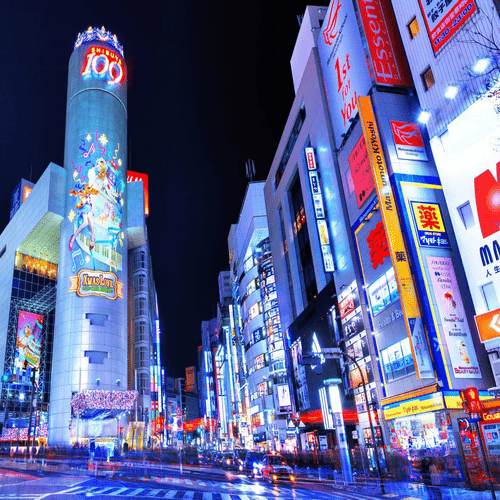

You might not know it or realize it but Japan is potentially the best country in the world. You can find anything you want in Japan! You heard me right. In fact, you will be surprised to discover new unheard of things in this country! Here are some of the special things in Japan:
Japanese cuisine offers an abundance of super delicious food with a boundless variety of regional and seasonal dishes. Japanese cuisine encompasses the regional and traditional foods of Japan, which have developed through centuries of political, economic, and social changes. The traditional cuisine of Japan is based on rice with miso soup and other dishes. Side dishes often consist of fish, pickled vegetables, and vegetables cooked in broth. Seafood is common, often grilled, but also served raw as sashimi or in sushi. Seafood and vegetables are also deep-fried in a light batter, as tempura. Apart from rice, staples include noodles, such as Soba and Udon.
Here are some must-try Japanese foods:Some of the Ingredients:
Some of the Ingredients:
Some of the Ingredients:
Japan is well-known for its electronics industry throughout the world, and Japanese electronic products account for a large share in the world market, compared to a majority of other countries. Japan is one of the leading nations in the fields of scientific research, technology, machinery, and medical research. Japan has received the most science Nobel prizes in Asia. Japan has large international corporate conglomerates such as Fuji (which developed the nation's first electronic computer, FUJIC1999, in 1956) and Sony. Sony, Panasonic, Canon, Fujitsu, Hitachi, Sharp, NEC, Nintendo, Epson and Toshiba are among the best-known electronics companies in the world. Toyota, Honda, Nissan, Mazda, Mitsubishi, Suzuki, and Subaru are also very well known automobile companies in the world.
You won't even be able to see it passing!
This is Erica, an Android
City screens give night a new charm
Stores horizontally instead of vertically
Traditions in Japan aren't similar to the rest of the world. Why? Because Japanese traditions are unique and special. You will always be able to tell if it's "Japanese" or not. Main reason to that is: Japan was an isolated island for so long. Thus, it wasn't influenced by outside cultures. That's why it's still nowadays very unique in terms of its culture.
Just look at the examples below!
Japanese are so polite and respectfulThey often bow as a sign of respect.
Japanese women are so gorgeous!
Keep in minds those are only example. There are still a lot of mind-blowing in Japan!
«Use the navigation bar to discover more»